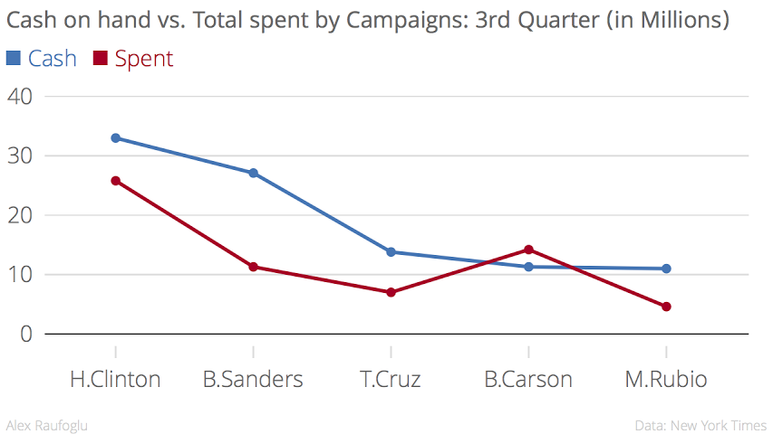
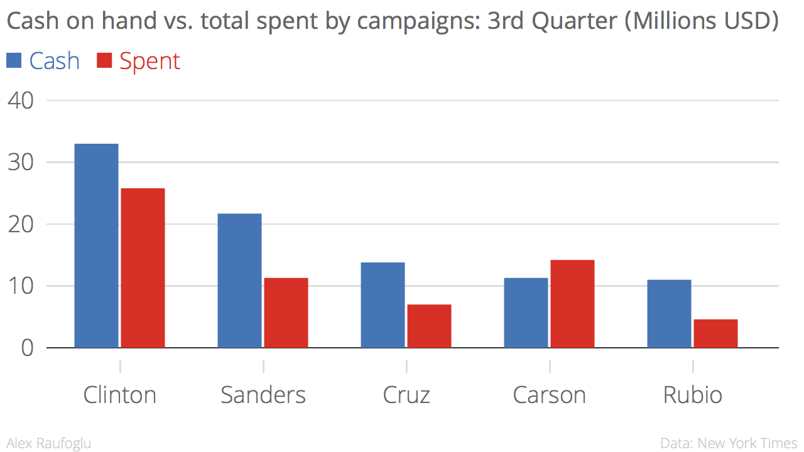
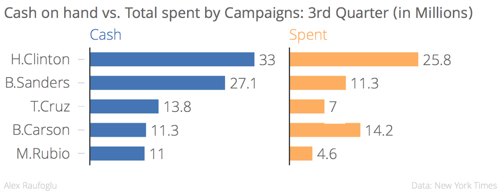
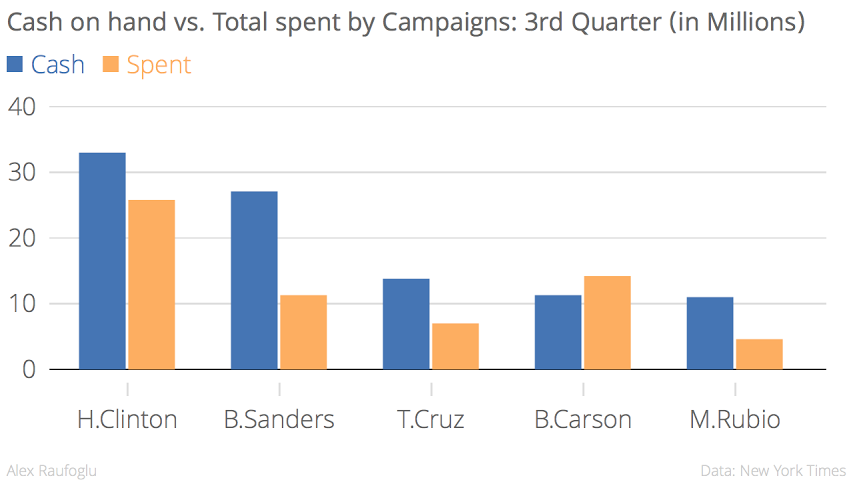
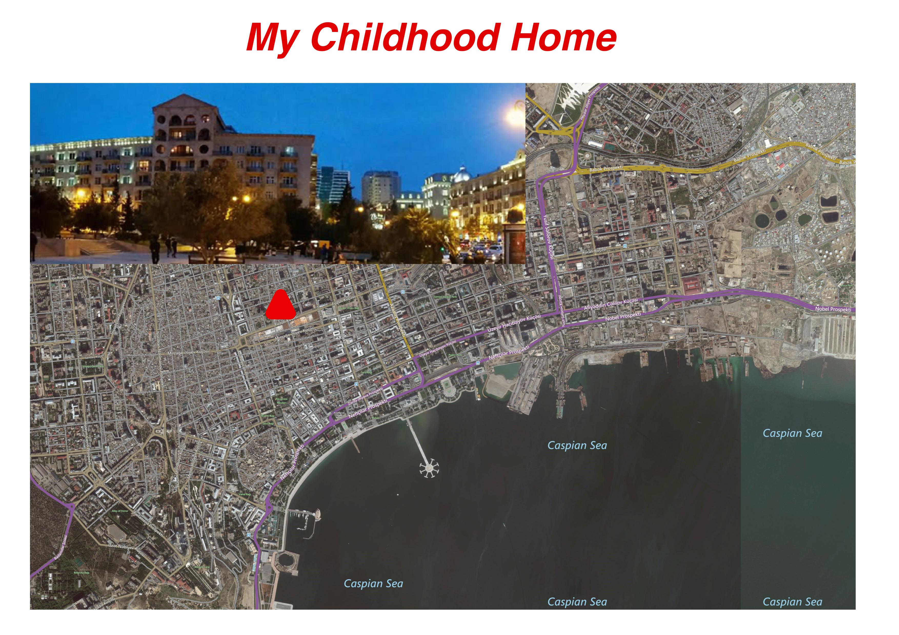
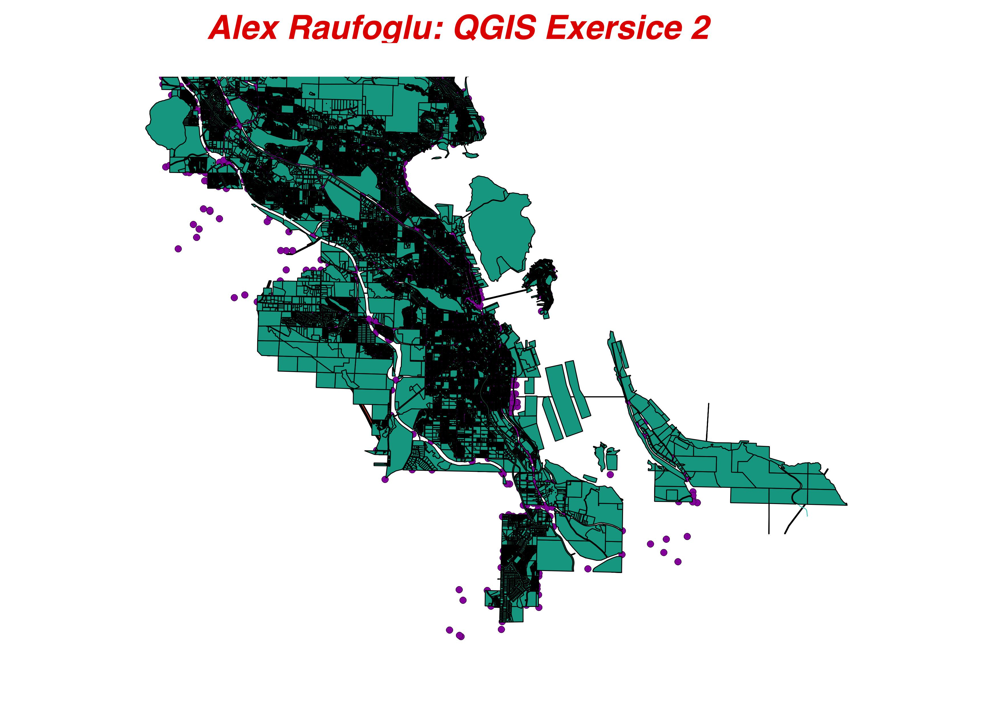

Alex Raufoglu
Campaigns


In the lands of intolerance, pop competition is just a big politics
Europe's favorite song contest - Eurovision is the biggest pop competition and one of the longest running TV shows in the world.
The annual musical contest suggests a model for European unity and traditions worth following.The themes of equality, diversity and tolerance have gained increasing traction in the politics of Eurovision in recent years.
Sometimes, however, the contest was hosted by post-soviet authoritarian regimes characterized by intolerance for dissent and disregard for civil liberties including gender equality (i.e. Russia, Belarus, Azerbaijan) seeking to boost their international images, a move that illustrates a strange truth: in the lands of the former Soviet Union, pop competition is just a big politics...
As I am debuting my new Tableau project for a class, I decided to focus on how the gender politics of Eurovision still divide. In the In the Dashboard below you will be able to review a collection of charts, and learn about Eurovision's host countries since 1998, and amount of points and artist gender per country.


What countries do post-Soviet asylum seekers in the U.S. come from?


Write a News Story
Javascript

JS Icon Interactive
A quick survey at the AU campus early this week revealed that majority of students are commuters. Out of 41 students whose opinions were asked by this author, 22 said, they commute by car, while 14 said they take the bus and 7 students said, they come by bike.

My meme
About me
I'm a Washington-based journalist specializing in the Caucasus and wider Black Sea region. I cover the U.S. policies on South Caucasus, Eastern Europe, Turkey and the surrounding region. My coverage interests also include Eurasian democracy, rights, media and other freedoms, as well as peace and security.
Want to reach me? Try me at ralakbar@gmail.com.